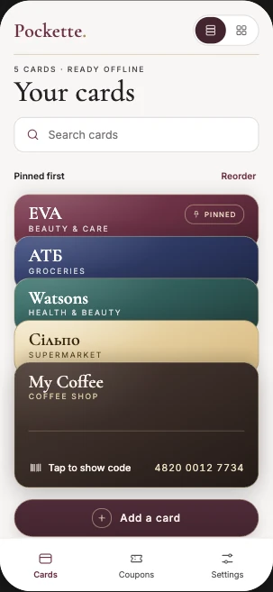
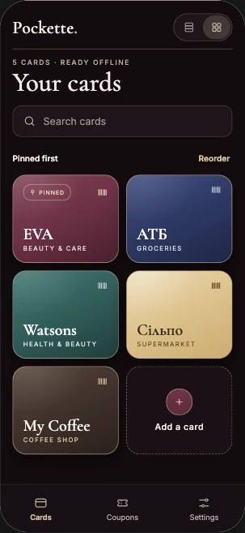

INDEPENDENT PRODUCT · IN DEVELOPMENT
Pockette
A beautifully simple, offline-first loyalty wallet — one tap from store to barcode.
01 / THE ORIGIN
A tiny inconvenience I genuinely missed
I used to keep all my loyalty cards in one Ukrainian app, Sto Kart (Сто карт). When it disappeared, something surprisingly useful vanished from my everyday routine: open one wallet, tap a store, show its code. No rummaging through screenshots or opening five different retailer apps.
Pockette began as a personal project to bring that simplicity back — with a more thoughtful interface, offline access and just enough visual personality to make a practical tool enjoyable to use.
Product challenge: How might we make a loyalty card available in seconds at the exact moment it matters, without burying it under shopping feeds, account setup or unnecessary features?
02 / DISCOVERY & RESEARCH
The problem isn’t having cards. It’s finding them.
I reviewed the category and explored different ways people keep rewards: physical cards, retailers' individual apps, screenshots and saved messages. Existing solutions helped me identify the opportunity, but the starting point was my own experience — not a claim that every shopper shares it.
The recurring friction I wanted to investigate was the moment at checkout: a queue behind you, a phone in one hand and the right barcode somewhere in a collection of apps and images. This shifted the design focus away from managing rewards and towards retrieving a card reliably.
Working hypothesis: A single-purpose, offline-first wallet with immediate code access can feel both faster and calmer than a feature-heavy rewards app. This remains a hypothesis until usability testing.
03 / USER JOURNEY
Mapping the moment of friction
I mapped a provisional current-state journey: get a card → save it somewhere → arrive at checkout → search for it → present the code → leave. The pressure peaks between searching and presenting — the very steps an everyday wallet should simplify.
The proposed future state is intentionally shorter: open Pockette → find or tap the store → show the code. Cards can be added once by scanning, importing an image or entering details manually; the regular checkout experience should require almost no thought.
One more thing to keep
Saved somewhere…
Where is it?
People are waiting
Will this scan?
Relief, until next time
Different locations, different interactions, extra effort under pressure.
A familiar, repeatable path from store recognition to barcode.
This is a design-led journey map based on assumptions and personal experience. Future interviews and checkout observations will be used to refine it.
04 / INFORMATION ARCHITECTURE & FLOW
One primary job. Very few steps.
The core experience is a collection of saved cards, search and a direct route to a full-screen barcode or QR code. A card tap should reveal the code immediately, not open another menu. Favorites or pinned cards help with repeat visits; a compact list remains an important alternative when a wallet grows.
Primary flow: My Wallet → tap a store → full-screen code → scan at checkout.
Add-card flow: Add → scan / upload / manual entry → verify the code and format → save.
Secondary flow, planned: Coupons → find a saved offer → copy its text code. Discount codes belong in a separate tab because they solve the same retrieval problem without complicating the loyalty card flow.
05 / MOODBOARD & VISUAL EXPLORATION
A wallet you want to open — designed for speed
I explored different visual directions, from soft editorial layouts to expressive card interfaces. I ultimately moved towards gender-neutral Bordeaux minimalism: restrained neutral surfaces, deep burgundy accents, readable typography and recognizable store branding.
The overlapping card stack borrows a familiar physical-wallet metaphor. The store name must remain visible on every exposed card; search and an accessible compact-list option keep aesthetics from becoming friction when the collection grows.
Brand colors belong to the individual store cards, while the app's own navigation stays consistent. The barcode view intentionally drops the decoration: dark code, white background, adequate quiet zones and a clear way back.
Accessibility is part of the visual brief: WCAG-aware text and UI contrast, legible labels, sufficiently large touch targets, visible focus states and reduced-motion support. A good-looking interface still has to work in a bright shop, one-handed and under time pressure.
Choosing a visual language — not just a trend
The evaluation was based on three product-specific criteria: recognizable personality, glanceability at checkout and accessible contrast. These are directional design judgments, not usability test scores.
| Direction | Visual character | Advantage | Trade-off for Pockette | Decision |
|---|---|---|---|---|
| Soft pastel | Blush, lavender, gentle surfaces | Warm and friendly | Too closely tied to a feminine lifestyle aesthetic | Not selected |
| Editorial minimalism | Warm neutrals, expressive serif, air | Elegant and timeless | Less suited as the entire visual system for fast store scanning | Reference only |
| Glossy / glass | Translucent layers, floating controls | Contemporary depth | Effects may weaken legibility and barcode clarity | Use sparingly |
| Playful expressive | Loud accents, bold geometry | Memorable personality | Competes with many store brand colors | Not selected |
| Bordeaux minimalism | Wine accents, ivory, charcoal, branded cards | Distinctive but restrained | Contrast still needs testing in all states | Selected ✓ |
Exploration references include current mobile interface trends and the needs of a time-sensitive utility. The visual choice is a design rationale, not evidence of preference among target users.
Beautiful because it's simple.
Memorable because it works.


06 / PRODUCT DECISIONS
Choosing what not to build
The prototype implements static barcode and QR capture through camera, photo and manual entry, along with search, draggable card ordering, code display, local browser storage and backup/restore. It includes no mandatory account, shopping feed or AI features. Offline behavior is built into the PWA, with real-device verification still required.
The prototype already includes a separate Coupons tab, text-code copying and expiry dates. Associating offers directly with loyalty cards, cloud sync and advanced reminders can wait. Not all retailer codes can be reproduced — dynamic or account-bound codes require explicit handling rather than promising universal compatibility.
Key trade-off: The stacked design creates an appealing brand signature, but a compact list may outperform it with 30 or more cards. Both deserve real task-based comparison rather than choosing solely by appearance.
07 / WORKING PROTOTYPE
From the moodboard to an actual wallet
I inspected the current implementation rather than relying on early UI concepts. Pockette is now a React and TypeScript PWA, with a tactile overlapping stack, a tile-layout alternative, searchable cards, drag or button-based reordering, and a direct barcode viewer. The repository also includes a camera and photo scanner, manual entry, a separate coupons area, appearance and language settings, and local backup/import.
The screenshots above document the visual exploration. The diagram below reflects the current interface structure and the implemented interaction paths.
Implementation notes: ZXing handles on-device scanning; bwip-js draws supported codes. Data is stored in the browser, with an export/import feature because clearing site data can remove the wallet. The repo includes Playwright tests, but physical checkout scanner validation is still pending.
08 / VALIDATION & NEXT STEPS
Testing delight against real-world utility
The next step is to compare the implemented stacked cards with the available tile layout using realistic checkout tasks. A compact list remains a further option to evaluate as collections grow. I'll measure first-attempt card selection, time to display the correct code and perceived ease of use. Three seconds is an initial retrieval target, not a measured result.
I'll also test recognition and barcode readability with real store cards and scanners, confirm that saved codes remain available after reopening in airplane mode, and test import, backup and restore. Accessibility checks will cover contrast, keyboard and screen-reader access, text scaling and reduced motion.
Project status: Working React/TypeScript prototype in development, with code and an automated Playwright test suite in its GitHub repository. The research framing and journey are design hypotheses; I have not yet documented independent user-test results or verified scanning with physical checkout devices.